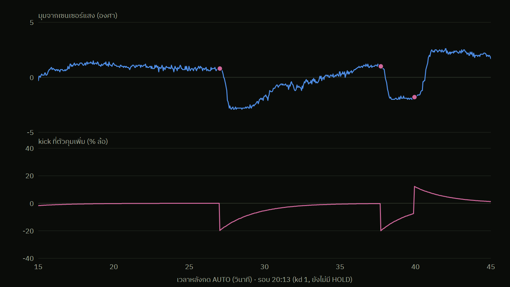

สิ่งที่ไม่เป็นไปตามคาด
เตะตอนเกือบถึงเป้า = ยานกระเด็นเลยไปอีกฝั่ง

kick = ตัวคุมเพิ่มล้อทีเดียว 20% เมื่อยานนิ่งแต่ยังไม่ถึงเป้า
แท่นฝืดแบบติด-หลุด
หลุดแล้วไถลไป 3–4.5° ทุกครั้ง
แก้: ใกล้เป้าแล้วเลิกเตะ (HOLD, team-3) และห้ามเตะใน HOLD เลย (team-4)
ข้อมูล: กล่องดำ รอบ 20:13 · จุดชมพู = ตอนที่ kick
13